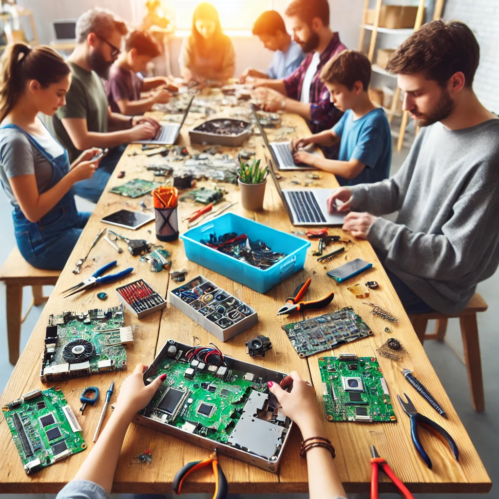

Montagem de Computadores para Doação
Reaproveitamos peças de computadores antigos para montar novos equipamentos funcionais que são doados a escolas, ONGs e famílias de baixa renda, promovendo inclusão digital e oportunidades educacionais.
Construção de Arcades e Projetos Criativos
Componentes eletrônicos que não podem ser usados em PCs ganham nova vida em projetos como arcades retrô, estações multimídia e outras iniciativas criativas que combinam tecnologia e sustentabilidade.

Oficinas e Educação Ambiental
Oferecemos oficinas para ensinar como desmontar, reaproveitar e montar eletrônicos, incentivando o aprendizado prático e a consciência sobre o impacto ambiental do lixo eletrônico.